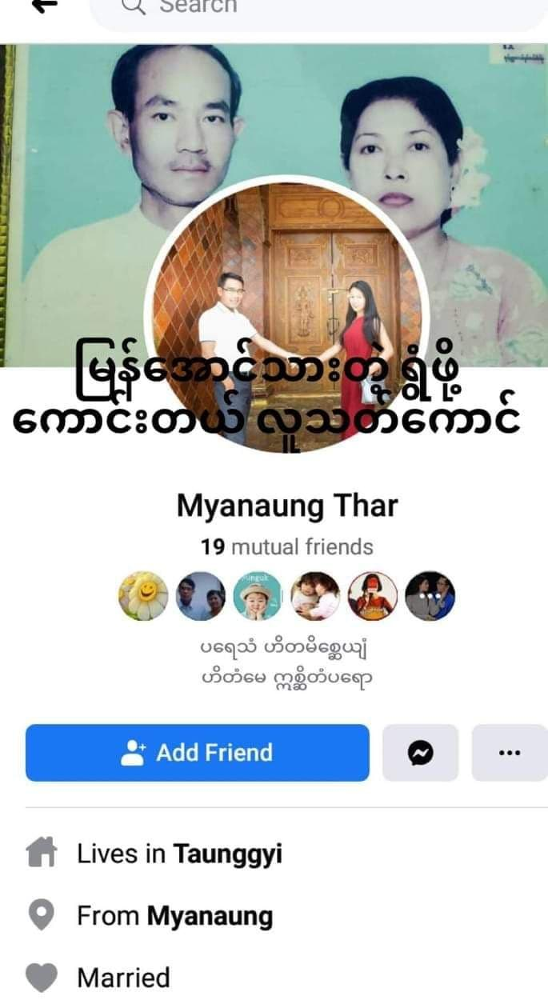
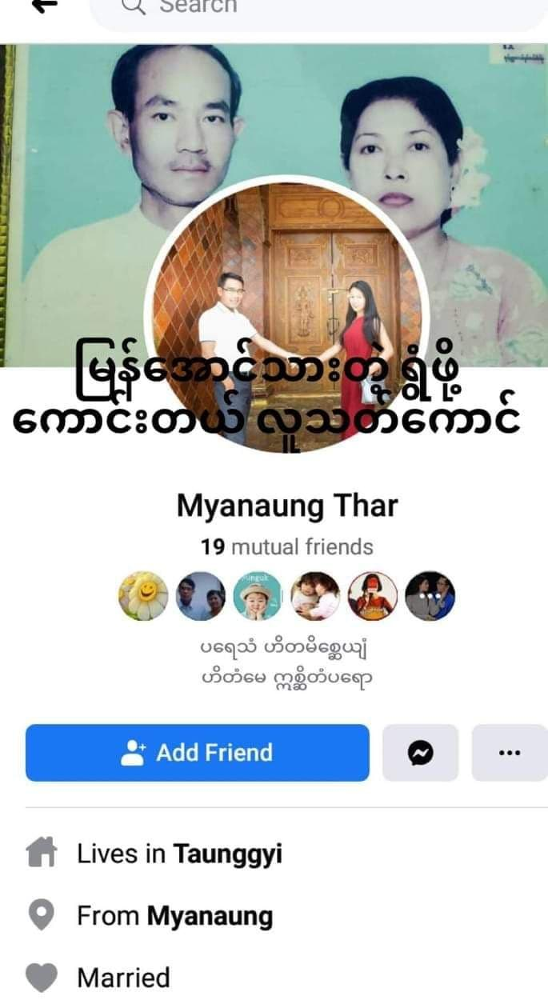

Soe Myint & Than Than Win
ဒီတစ်ခါ Social Punishment ( လူမှုအသိုက်အဝိုင်းကနေ ဖယ်ကျဉ်ခြင်း) (***လောင်ကောင်မကြီးက အင်္ဂလိပ်စာ မတတ်မာဆိုးလို မြန်မာလိုပါရေးထားပေး) လုပ်ရမယ့် လင်မယားကတော့ တာဝတိံသာလမ်းက လူသတ်ကောင်ဗိုလ်ရဲ့ မိဘတွေဖြစ်တဲ့ ဦးစိုးမြင့်နဲ့ ဒေါ်သန်းသန်းဝင်းတို ဖြစ်ပါတယ်။ တရုတ်ကျောင်းလိုခေါ်တဲ့ အ.မ.က တာကြီးတန်းကျောင်းရှေ့တည့်တည့်က အိမ်ပါ။ အရင်ကတော့ အသုတ်တွေ မုန့်တွေ ရောင်းပါတယ်။ သူတိုရဲ့သား လူသတ်ကောင်စစ်ဗိုလ်ဖြစ်လာတော့ ဇောင်းတကြွကြွဖြစ်ခဲ့ပေမယ့် လွန်ခဲ့တဲ့ ငါးနှစ် NLD အစိုးရလက်ထက်မှာတော့ အမြီးကုတ်နေခဲ့ရပါတယ်။ အာဏာစသိမ်းတဲ့နေ့တည်းက ဇောင်းစပြီးပြန်ကြွလာတဲ့ သူတို လင်မယားဟာ ပြန်ပြီး စွာကျယ်စွာကျယ်နဲ့ အာဏာသိမ်းတာ ကောင်းကြောင်း၊ သူတိုရဲ့လူသတ်တပ်မတော်ကြီးက ဘယ်လိုတော်ကြောင်းတွေ ပြန်ပြီး စပြောပြီး သခင်အားရကျွန်ပါး စဝ လာကြပါတယ်။ နေ့တိုင်းနေ့တိုင်းလဲ ဒလံပေါင်းစုံနဲ့ အတင်းပေါင်းစုံပြောပြီး ဆန္ဒပြပွဲ သပိတ်မှာပါဝင်ကြတဲ့ သူတိုထက် ပညာတတ်တဲ့ ကျောင်းသားကျောင်းသူလေးတွေကို အဖေအမေ ခေါ်စရာမရှိလိုဇောင်းကြွနေကြတယ်၊ မြှောက်ပေးတိုင်းလုပ်တယ်၊ ခုရောက်လာတဲ့ တပ်မ ၁၀၁ က ကြမ်းတယ် လုပ်ပစ်မှာဆိုတာမျိုး မိဘချင်းကိုယ်ချင်းမစာပြောပါတယ်။ ဒီလောက် ပညာတတ်လူငယ်လေးတွေ ရက်ရက်စက်စက် အသတ်ခံနေရတာကိုလဲ (သူတိုအိမ်မာ MRTV ပဲရလိုလားတော့ မသိ )ပစ်တာ မှန်တယ်ဆိုတာမျိုးတွေ နေ့စဉ်ပြောပါတယ်။ တာဝတိံသာလမ်းမှာ လူစုလုဝေးဖြစ်တဲ့ ဆိုင်ကယ်သပိတ်နေ့ကလဲ ကလေးတွေ သူတိုအိမ်ထဲ ဝင်ပြေးမှာဆိုးလို အိမ်တံခါးကို အတင်းဆွဲပိတ်ပါသေးတယ်။ သေနတ်သံကြားလို သံပုံးတီးသံ ငြိမ်သွားတာကိုလဲ လှောင်ပါသေးတယ်တဲ့ ( ဒါကတော့ တွေ့တယ်မလား မြန်အောင်သားတို ကိုယ့်ဘက်က သေနတ်ပစ်လို သံပုံးတီးသံလျော့ရင် စစ်ကျွန်အားပေး လောက်ကောင်တွေ ဝမ်းသာကြလိမ့်မယ် အဲ့လိုအဖြစ်မခံနဲ့) အဲ့တော့ အဲ့ သန်းသန်းဝင်းလောက်မနဲ့ ဦးစိုးမြင့်လောက်ကောင်ကြီးမိသားစု အထူးသဖြင့် သူတိုရဲ့သား စစ်ခွေး၊ လူသတ်ကောင် မိသားစုကို လူ့အသိုက်အဝိုင်းကနေ ဖယ်ကျဉ်ပြီး Social Punishment လုပ် အဖက်မလုပ်ကြဖို ဆော်ဩလိုက်တယ်။
 
